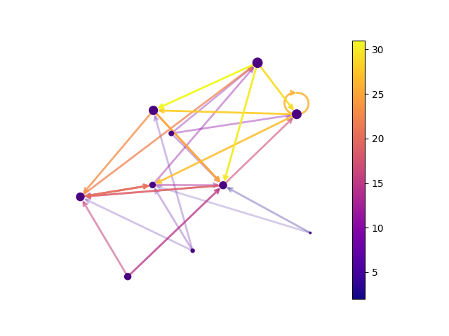

Note
Click here to download the full example code
Directed Graph¶
Draw a graph with directed edges using a colormap and different node sizes.
Edges have different colors and alphas (opacity). Drawn using matplotlib.
Out:
/home/runner/work/networkx/networkx/examples/drawing/plot_directed.py:42: MatplotlibDeprecationWarning: Starting from Matplotlib 3.6, colorbar() will steal space from the mappable's axes, rather than from the current axes, to place the colorbar. To silence this warning, explicitly pass the 'ax' argument to colorbar().
plt.colorbar(pc)
import matplotlib as mpl
import matplotlib.pyplot as plt
import networkx as nx
seed = 13648 # Seed random number generators for reproducibility
G = nx.random_k_out_graph(10, 3, 0.5, seed=seed)
pos = nx.spring_layout(G, seed=seed)
node_sizes = [3 + 10 * i for i in range(len(G))]
M = G.number_of_edges()
edge_colors = range(2, M + 2)
edge_alphas = [(5 + i) / (M + 4) for i in range(M)]
cmap = plt.cm.plasma
nodes = nx.draw_networkx_nodes(G, pos, node_size=node_sizes, node_color="indigo")
edges = nx.draw_networkx_edges(
G,
pos,
node_size=node_sizes,
arrowstyle="->",
arrowsize=10,
edge_color=edge_colors,
edge_cmap=cmap,
width=2,
)
# set alpha value for each edge
for i in range(M):
edges[i].set_alpha(edge_alphas[i])
pc = mpl.collections.PatchCollection(edges, cmap=cmap)
pc.set_array(edge_colors)
plt.colorbar(pc)
ax = plt.gca()
ax.set_axis_off()
plt.show()
Total running time of the script: ( 0 minutes 0.234 seconds)